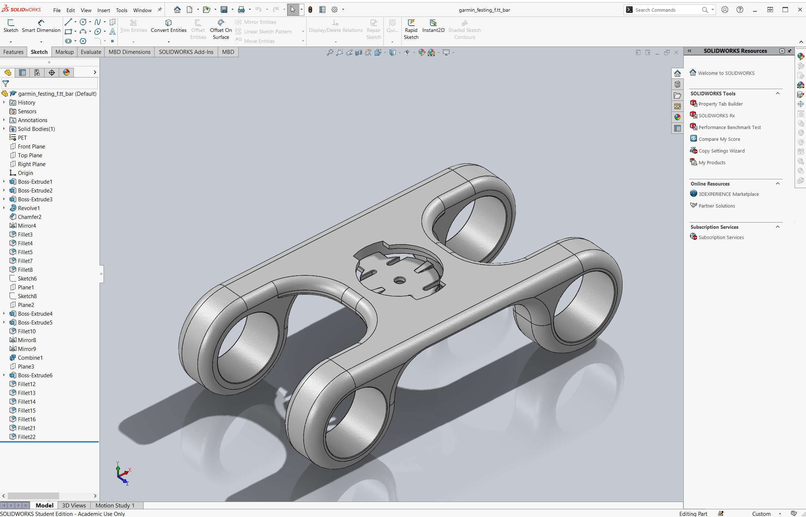

Creating a table for the tunnel console of my car and vinyl cutting an Audi logo.
I wanted to create a custom mount for my garmin cycling computer on my bike that fitted to the TT-bars I have on the bike. For durability I used PETG plastic in the mount and also for the test of the mount.
I used Solidworks to create the custom mount. I began by measuring another mount I had which didn´t fit my bike but was created for the bike computer. Then I measured critical dimensions on my bike. You can see them in the table below:
| Variable | Mesurement | Length |
|---|---|---|
| L | between TT bars | 62 mm |
| Dbar | Diameter of one TT bar | 22 mm |
| Dout | Outer diameter of mount | 34 mm |
| Din | Inner diameter of mount | 30 mm |
| Dflange | Inner diameter of the flange of the mount | 25 mm |
| ttot | The total thickness of the flat part of the mount | 5 mm |
| tflange | The tickness of the upper flange in the mount | 1.5 mm |
| tcentre | The thickness of the centre of the mount | 1.5 mm |
Then I created a 3d model of the base of the mount (the center of the mount which the bike computer is supposed to mount) using those critical dimensions. When the base was finished I created the holes for the TT-bar. To create the part I drew sketches in 2d and extruded them. I stated creating the center part and worked my way out until I made the holes for the TT-bar last. To make my life simpler, I used mirror to mirror features instead of creating them twice.
To make sure I would be able to print the mount, I had to decide what material I was going to use and if there would be any need for support material. I also had to find the suitable layer height and find out if I would need to offset any dimensions due to unaccuracy in the printing.
I choose to print the mount out of PETG plastic because it is strong and durable, but not too stiff. Then I choose the printer with the smallest layer heigth because the surface of the centre of the mount needs to be quite fine. The printer I choose was Pruca i3 MK3S+, which had the smallest layer height of 0.1 mm.
To define if there would be need for support material and if I would need to offset any dimensions, I had to make a 3D printing test.
To make sure the mount fitted on my bike and the computer fitted on it, I had to make a test piece with measured dimensions and print that test. I took the 3d model I had made earlier and cut everything of it except the centre and one hole to see how the center would look like and how the holes would fit. To print I had to export the 3d model of the mount from Solidworks to .stl file. Then I had to download pruca slicer, available from this link Link for PrucaSlicer
The only thing that was complicated during the installation of PrucaSlicer was to select the right printer, the printer in the fablab I was using was called Prusa i3 MK3S+. I used this printer because it was able to print with 0.1 mm layer height and able to print out of PETG filament
The image below is a screenshot taken from the pruca slicer after the part was sliced. When installation of the software was finished, I had to select the layer height, number 1. Then I had to select the filament I was going to print the test out of (number 2) and make sure the right printer was selected (number 3). Then I had to go to file and import the stl. file from solidworks of the test. See number 4 on the image below. Then I had to add support where the computer was supposed to be mounted on the mount because that area was to be printed upside down and because of gravity, 3D printers are not able to do that. I added support by selecting support on build plate only (number 5) Then I pressed slice. The button to slice was where number 6 points at before the model was sliced. To transfer the G-code for the 3D printing to the printer I had to insert a SD-card to the computer and then press number 7 to copy the code to the SD-card.

Then I transfered the SD-card to the printer, selected the right code to print using the swivel knob on the printer and started printing. The printing of the test took 2 hours and 6 min to finish. When the printing was finished, I had to clean all support material of the test using a rasp and wire cutters.
After I had cleaned the test I tried to fit the garmin computer to the mount. It fitted but it was a very tight fit. You can see the mount in the picture on the right side of the page.
Then I tried fitting the test on one TT-bar but the hole on the test was to small so it wouldn´t fit. I broke the test by trying to fit it on the TT-bar.
After I broke the test, I measured the diameter of the hole that broke (Dbar) and measured it as 21.7 mm not 22 mm. Therefore, I had to make modifications based on the test results. I set the diameter of the hole to 22.6 mm to account for error in the printing. I also made modifications to account for the tight fit of the bike computer. I changed tflange to 1.4 mm.
When I had made the modifications to the 3d file I printed the final results. I followed the same steps and used the same settings as when I printed the test so I will not go into detail about the setup and how to print here. You can read about how to do that in the test chapter above. The printing took 6.5 hours to finish.
In the video below you can see the final result:
To create the tabel for the Suzuki Jimny, I did in project 2, I needed to know how big the table was going to be. To do that I created a 3D scanning of the interior of the car to know how the table would fit.
To begin with I did not know what to scan. I started by taking photos of my dad´s truck which is a modified Toyota Hilux. That didn´t go well because I did not take enough pictures of the car so the software was not able to create a photogrammetry of the truck. I started by using Recap from Autodesk but since it is an cloud based computing software, it took extremely long time to get the results form them once the photos had been uploaded. I tried using it. The workflow was pretty easy, basically upload the pictures to the cloud and wait for the program to finish. It took many hours for Recap to finish processing a model of the car and the results were terrible. I got some weird surface out of it that did not look anywhere near a truck. Therefore, I searched for a photogrammetry software that used local hardware instead of cloud since then I would not have to wait in queue for other computations to finish on the server that handles the photogrammetry calculations. Then I tried Colmap which is a very raw software to process photogrammetry. Every time I tried to use it I got an error after a few hours so I started my search again for another software. I finally found Meshroom which had an easy workflow and was relatively quick. Though, I still got a very weird model from I since I had not taken enough pictures of the truck. Instead of taking another set of pictures of the Hilux, I photographed the interior of the Jimny, more specifically, the tunnel console since then I could use that 3D model to see how the table I did in project 2 would fit inside the car.
I took 74 photos of the tunnel console inside the Jimny and imported them into Meshroom, then I had to import them to the computer and create a specific folder for them. Then I had to drag the folder to the red circled area where the pictures are in the picture above and press start. See the small red circled area near the top banner of the sceen. I got an error for the first time I ran the calculations. To fix the error I had to remove the pictures that caused the error which was easy because they where highligted in red in the list where the pictures were. See the big red circled area in the picture above. Then I had to run the calculations again and got no error. When the calculations were finishe I found the 3D model in files created in Meshroom next to were I saved the meshroom file for the project. The file was in .obj file format.

I opened the scanned interior in Inventor. There, I could view the textured results. Quickly, I found out that the model wasn´t in the right scale. By searching for answer on google, I quickly found out that there was no simple way to scale the model in Inventor. Then, I tried searching for a solution with solidworks and found solution from Grabcad on how to scale objects in Solidworks.
To scale the model in I used reference measurement to scale up the model in Solidworks. To scale the model in Solidworks, I had to convert the obj. file to Soldworks part file and then do the following commands Meshmodeling => Convert to Mesh Body => Surface From Mesh. When I had done that, I could scale the model. I used a reference measurement I had made when I measured the tunnel console for project 2. Then I had to try scaling factors until the part was scaled correctly. The scaling factor I ended up with was 200.

When the interior had been scaled, I transfered the assembly of the table for the tunnel console from Inventor to Solidworks and placed it in a same assembly a the interior. From there I could see how it would fit. In the image below, it can be seen how the table would fit inside the Jimny.

The image below shows a closeup look on how the table will fit inside the Jimny.

| Name | Description | Time |
|---|---|---|
| 3D modeling | Creating the custom mount in Solidworks | 4 Hours |
| Test | Modifying the mount to make it quicker to print | 0.5 Hours |
| 3D Printing Test | Printing the test part | 2.5 Hours |
| Modifications | Making modifications to to mount based on test results | 0.5 hours |
| 3D printing Mount | 3D printing the mount for the bike | 6.5 Hours |
| 3D scanning | Taking photos and processing in Meshroom | 10 Hours |
| Documentation | Documenting the whole project and adding to the website | 7 Hours |
| 31 Hours | ||
Creating a table for the tunnel console of my car and vinyl cutting an Audi logo.
You can contact me by using email or by phone.